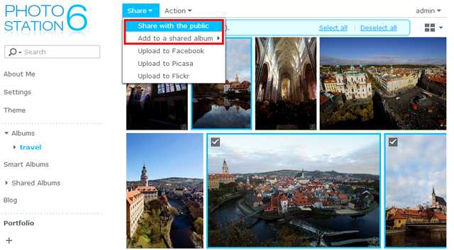

Přehled
Photo Station je webová aplikace, která vám pomůže přes internet organizovat a prohlížet fotografie uložené na vašem serveru Synology NAS. Díky vylepšenému a uživatelsky příjemnému rozhraní vám aplikace Photo Station umožní odesílat, procházet, spravovat a sdílet fotoalba díky pár kliknutím myší.
1. Instalace aplikace Photo Station
Chcete-li nainstalovat aplikaci Photo Station, přejděte prosím na možnost Centrum balíčků, najděte možnost Photo Station a pak klikněte na možnost Instalovat.

2. Odeslání fotografií
Než budete moci v aplikaci Photo Station fotografie procházet a spravovat, musíte nejprve jedním z následujících způsobů vytvořit alba a odeslat fotografie.
2.1 Odesílání fotografií prostřednictvím aplikace Photo Station Uploader (pro Windows a Mac)
Doporučujeme vám použít Photo Station Uploader, protože během procesu odesílání budou vytvořeny miniatury každé fotografie. Odesílání souborů prostřednictvím aplikace Photo Station Uploader uvolní výpočetní kapacitu vašeho počítače a urychlí konverzi.
- Stáhněte si a nainstalujte aplikaci Photo Station Uploader (k dispozici v Centru pro stahování společnosti Synology).
- Na počítači klikněte pravým tlačítkem na všechny fotografie, které chcete odeslat, a vyberte možnost Odeslat do Photo Station > Vytvořit nový profil, čímž otevřete průvodce.
- Zadejte vlastní název a název serveru nebo IP adresu cíle Synology NAS pro nový profil.
- Vyberte, zda chcete odeslat soubory do Photo Station nebo Personal Photo Station.
- Zadejte údaje o uživateli pro cílové úložiště na serveru Synology NAS.
- Kliknutím na možnost Procházet vyberte cílovou složku nebo ve sdílené složce photo vytvořte podsložku.
- Jakmile je odesílání dokončeno, můžete na vašem serveru Synology NAS spustit aplikaci Photo Station a prohlížet nahrané soubory v různých režimech nebo upravovat další informace, jako například vlastnosti alba a přístupová práva.

Zadané informace o serveru a uživatelské údaje budou uloženy do tohoto profilu pro budoucí použití. Můžete nastavit několik profilů podle různých pravidel nebo cílových úložišť. Namísto opětovného vyplňování údajů o serveru můžete při dalším využití aplikace Photo Station Uploader vybrat již existující profil a použít již dříve nastavenou konfiguraci pro odesílání fotografií do stejného cílového úložiště.

2.2 Vytvořte alba a nahrajte fotografie přes aplikaci Photo Station
Spusťte aplikaci Photo Station a klikněte na Přidat, čímž vytvoříte nové album nebo odešlete fotografie z vašeho počítače nebo ze serveru Synology NAS do stávajících alb.

Pokud chcete fotografie odeslat raději přes rozhraní Photo Station, silně doporučujeme, abyste aktivovali QuickConnect. Ať jste doma, nebo na cestách, aplikace QuickConnect vám umožní získat přístup k serveru Synology NAS a k aplikaci Photo Station odkudkoli přes internet pomocí vlastního ID, aniž byste museli složitě nastavovat síťovou konfiguraci, například pravidla pro předávání portů. Další informace o aplikaci QuickConnect naleznete v tomto tutoriálu.
3. Sdílení fotografií
Díky funkci sdílení fotografií můžete na aplikaci Photo Station fotografie snadno sdílet s přáteli nebo je odeslat na populární sociální sítě, jako je Facebook, Picasa a Flickr.
3.1 Veřejné sdílení fotografií
- Najděte příslušné album a vyberte fotografie, které chcete sdílet.
- Kliknutím na Sdílet > Veřejné sdílení získáte odkaz.
- Pokud jste pro sdílení vybrali pouze jednu fotografii, tato fotografie bude přidána do sbírky pro sdílení pojmenované Sdílené fotografie. Zde můžete spravovat všechny fotografie, které jste sdíleli jednu po druhé.
- Pokud jste pro sdílení vybrali více fotografií najednou, fotografie budou seskupeny do nového sdíleného alba.
- Můžete také kliknout na možnost Sdílet > Přidat do sdíleného alba a přidat vybrané fotografie do již existujícího sdíleného alba (pokud je k dispozici). 
- Zadejte název nového sdíleného alba a pokud je to potřeba, stanovte dobu platnosti.
- Zkopírujte a vložte odkaz do emailů, programu pro instant messaging nebo webových stránek a sdílejte fotografie s kýmkoli.
- Ke všem sdíleným fotografiím má veřejný přístup každý, kdo má příslušný odkaz.
- Pomocí Nastavení > Sdílení můžete určit, kteří uživatelé budou mít právo veřejně sdílet položky v aplikaci Photo Station.
3.2 Sdílení fotografií na sociálních sítích
- Vyberte fotografie, které chcete odeslat, a poté vyberte možnost Sdílení > Odeslat na [webové stránky sociálních sítí].
- V zobrazeném okně klikněte na možnost Připojit k [webovým stránkám sociálních sítí] a poté se přihlaste pomocí účtu sociální sítě. Můžete se rozhodnout, zda fotografie odešlete do nového nebo již existujícího alba.

4. Organizace a prohlížení fotografií na mobilních zařízeních
Chcete-li se připojit ke službě Photo Station nebo odeslat fotografie pomocí mobilních zařízení, můžete si na svá mobilní zařízení pomocí QR kódů nainstalovat aplikaci DS photo+.